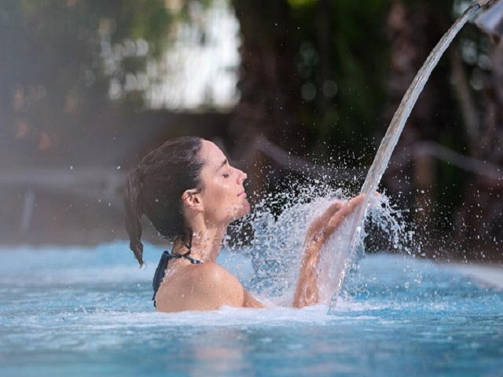
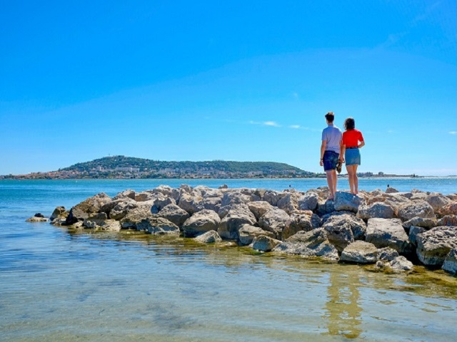
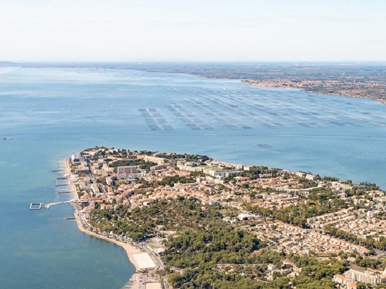
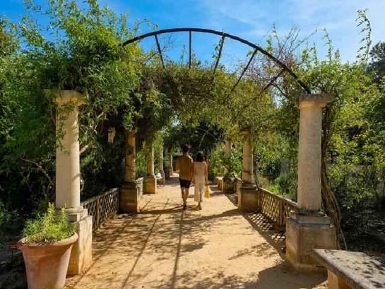
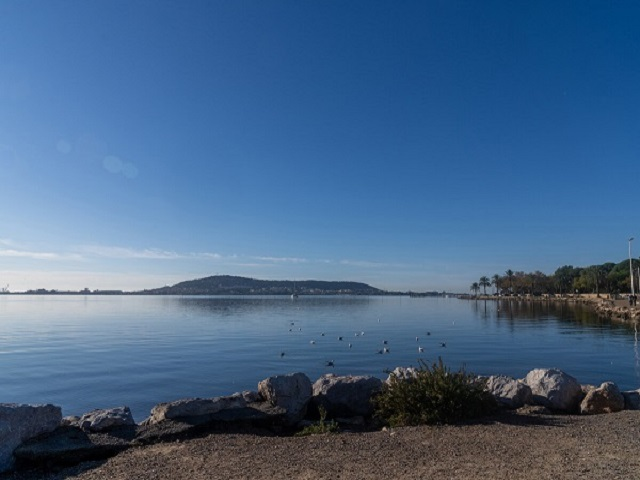

Studio des Grenadiers
Balaruc-les-Bains, située dans un cadre naturel exceptionnel entre Méditerranée et étang de Thau,
allie le charme et la douceur de vivre aux bienfaits naturels des éléments. Infrastructures de qualité,
cadre de vie, développement économique, la Ville de Balaruc-les-Bains possède de nombreux atouts.
Les thermes de Balaruc, adaptés aux enjeux de la médecine thermale du 21ème siècle, assurent également
l’avenir de la 1ère station thermale de France. Balaruc est bien plus qu'une simple station thermale.
Alliant la douceur du climat méditerranéen et l'excellence d’une eau aux bienfaits reconnus, le territoire
condense les sources du bien-être sous toutes ses formes. Une dolce vita permise par la générosité des éléments
et de ses habitants, et favorisée par la dynamique d'une ville qui a engagé un programme d’aménagement urbain d’envergure,
répondant aux besoins d’équipement et de développement de la cité. Balaruc-les-Bains, source d’énergies, est la destination soin,
bien-être et loisirs du bassin de Thau.




